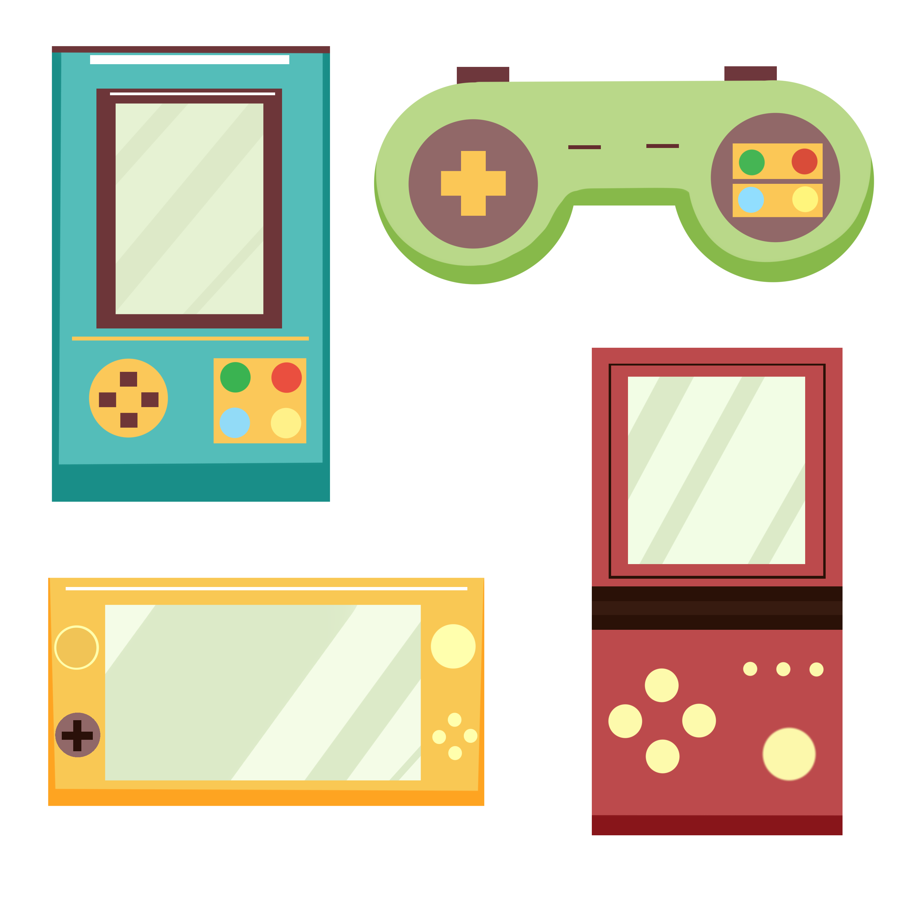

{% extends 'base.html' %}
{% block content %}
What is this and how do I use it?
I'm so glad you asked!
Game_Shelf showcase's your videgame collection and keeps track of your progress for each game.
Each game is either on your shelf (currently being played), or off your shelf (collecting dust).
Click on any game to view the deets and upload images.
Create an account to get started.
